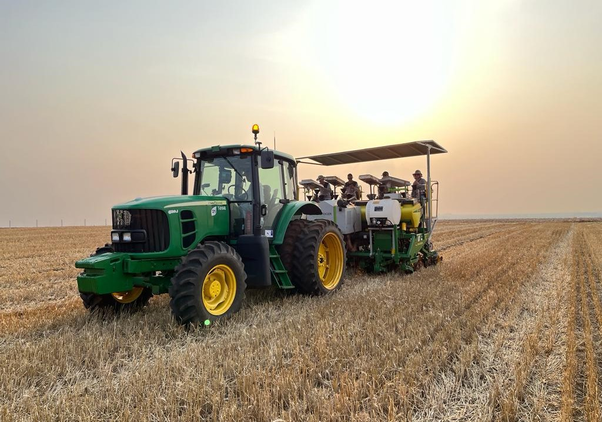

A agricultura do mundo globalizado à partir do apoio de máquinas agrícolas avançadas e
tecnológicas, tem um papel extremamente crucial na produção de alimentos em grande quantidade,
atendendo a demanda não só de cidades, como do mundo todo. Essas máquinas não atuam somente na
eficiência de produção do campo, mas também abrem diversas portas para outras áreas, especialmente
quando falamos da fabricação e manutenção de tais artifícios. A produção em larga escala de itens
do plantio tem um impacto significante não só para os fazendeiros, como também para as cidades e países,
por nos trazer variedade nos produtos que compramos no dia a dia.
Exemplos de máquinas agrícolas:
Tratores
|  |
Os tratores são utilizados para diversos tipos de atividade numa plantação. Podem ser usados para preparar o solo, colher, e até mesmo para se locomover em um curto período de tempo, fazendo estes serem um bem extremamente útil para uma fazenda e lavoura. |
|---|
Semeadoras
|
São máquinas de tamanho avantajado iguais às colheitadeiras, estas que, são responsávels por espalhar sementes pelas lavouras e plantações em geral, tornando um processo lento e cansativo em algo mais eficiente e produtivo. |
|---|
Colheitadeiras
|
Como seu nome diz, é uma colheitadeira, responsável pela coleta rápida e eficiente de bens da plantação, por conta de seu tamanho avantajado, sua coleta é mais veloz do que a de um fazendeiro de mãos nuas. Isso torna o processo de colheita muito menos demorado, e o torna mais eficiente. |
|---|
Pulverizadores
|
Os pulverizadores são máquinas responsáveis pela aplicação de produtos fertilizantes, protetivos, e outros químicos responsáveis pela proteção do plantio. |
|---|